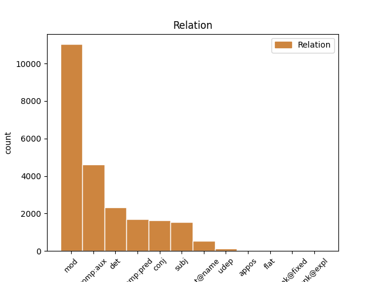
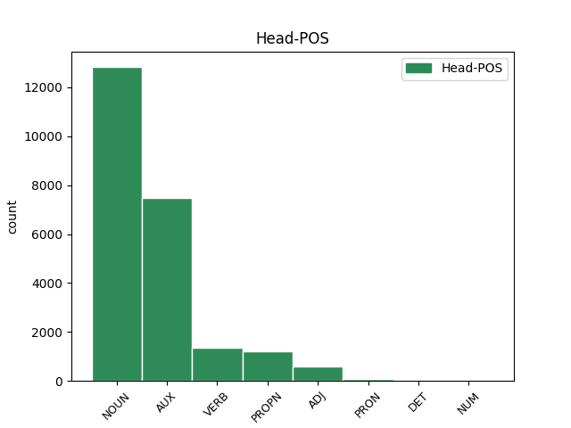
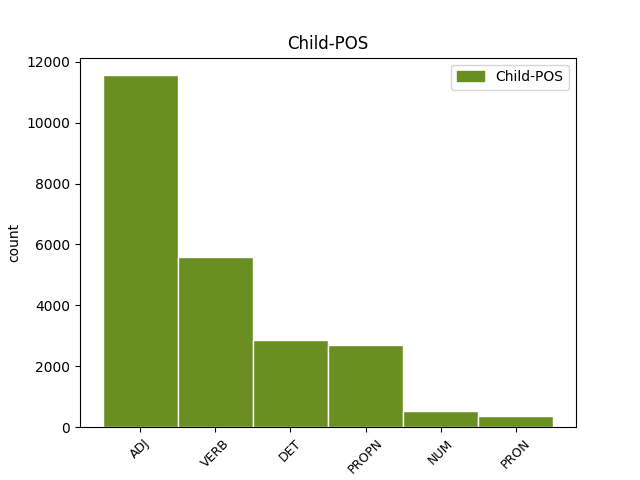

Distribution of features within this leaf



Agreement Rules sorted by frequency.
- When the dependent token is the modifer(mod) of the head token, and the dependent token is ADJ.
1 KOČEVJE _ _ _ _ 0 _ _ _
2 Iz _ _ _ _ 0 _ _ _
3 Kočevja _ _ _ _ 0 _ _ _
4 proti _ _ _ _ 0 _ _ _
5 Ljubljani _ _ _ _ 0 _ _ _
6 v _ _ _ _ 0 _ _ _
7 prihodnje _ _ _ _ 0 _ _ _
8 ne _ _ _ _ 0 _ _ _
9 bodo _ _ _ _ 0 _ _ _
10 vozili _ _ _ _ 0 _ _ _
11 zgolj _ _ _ _ 0 _ _ _
12 les _ _ _ _ 0 _ _ _
13 , _ _ _ _ 0 _ _ _
14 neprecenljivo _ _ _ _ 0 _ _ _
15 bogastvo _ _ _ _ 0 _ _ _
16 poraščene _ _ _ _ 0 _ _ _
17 pokrajine _ _ _ _ 0 _ _ _
18 tik _ _ _ _ 0 _ _ _
19 ob _ _ _ _ 0 _ _ _
20 hrvaški _ _ _ _ 0 _ _ _
21 meji _ _ _ _ 0 _ _ _
22 , _ _ _ _ 0 _ _ _
23 gneča _ _ _ _ 0 _ _ _
24 na _ _ _ _ 0 _ _ _
25 cesti _ _ _ _ 0 _ _ _
26 bo _ _ _ _ 0 _ _ _
27 tudi _ _ _ _ 0 _ _ _
28 zaradi _ _ _ _ 0 _ _ _
29 povečane _ _ _ _ 0 _ _ _
30 zmogljivosti _ _ _ _ 0 _ _ _
31 pri _ _ _ _ 0 _ _ _
32 proizvodnji _ _ _ _ 0 _ _ _
33 najbolj _ _ _ _ 0 _ _ _
34 znanih _ _ _ _ 0 _ _ _
35 slovenskih slovenski ADJ Agpmpg Case=Gen|Degree=Pos|Gender=Masc|Number=Plur 36 mod _ Dep=36|Rel=Atr
36 sirov sir NOUN Ncmpg Case=Gen|Gender=Masc|Number=Plur 0 _ _ _
37 . _ _ _ _ 0 _ _ _
1 KOČEVJE _ _ _ _ 0 _ _ _
2 Iz _ _ _ _ 0 _ _ _
3 Kočevja _ _ _ _ 0 _ _ _
4 proti _ _ _ _ 0 _ _ _
5 Ljubljani _ _ _ _ 0 _ _ _
6 v _ _ _ _ 0 _ _ _
7 prihodnje _ _ _ _ 0 _ _ _
8 ne _ _ _ _ 0 _ _ _
9 bodo biti AUX Va-f3p-n Mood=Ind|Number=Plur|Person=3|Polarity=Pos|Tense=Fut|VerbForm=Fin 0 _ _ _
10 vozili voziti VERB Vmpp-pm Aspect=Imp|Gender=Masc|Number=Plur|VerbForm=Part 9 comp:aux _ Dep=0|Rel=Root
11 zgolj _ _ _ _ 0 _ _ _
12 les _ _ _ _ 0 _ _ _
13 , _ _ _ _ 0 _ _ _
14 neprecenljivo _ _ _ _ 0 _ _ _
15 bogastvo _ _ _ _ 0 _ _ _
16 poraščene _ _ _ _ 0 _ _ _
17 pokrajine _ _ _ _ 0 _ _ _
18 tik _ _ _ _ 0 _ _ _
19 ob _ _ _ _ 0 _ _ _
20 hrvaški _ _ _ _ 0 _ _ _
21 meji _ _ _ _ 0 _ _ _
22 , _ _ _ _ 0 _ _ _
23 gneča _ _ _ _ 0 _ _ _
24 na _ _ _ _ 0 _ _ _
25 cesti _ _ _ _ 0 _ _ _
26 bo _ _ _ _ 0 _ _ _
27 tudi _ _ _ _ 0 _ _ _
28 zaradi _ _ _ _ 0 _ _ _
29 povečane _ _ _ _ 0 _ _ _
30 zmogljivosti _ _ _ _ 0 _ _ _
31 pri _ _ _ _ 0 _ _ _
32 proizvodnji _ _ _ _ 0 _ _ _
33 najbolj _ _ _ _ 0 _ _ _
34 znanih _ _ _ _ 0 _ _ _
35 slovenskih _ _ _ _ 0 _ _ _
36 sirov _ _ _ _ 0 _ _ _
37 . _ _ _ _ 0 _ _ _
1 Zdaj _ _ _ _ 0 _ _ _
2 je _ _ _ _ 0 _ _ _
3 že _ _ _ _ 0 _ _ _
4 jasno _ _ _ _ 0 _ _ _
5 , _ _ _ _ 0 _ _ _
6 da _ _ _ _ 0 _ _ _
7 na _ _ _ _ 0 _ _ _
8 občinski _ _ _ _ 0 _ _ _
9 ravni _ _ _ _ 0 _ _ _
10 strankarska _ _ _ _ 0 _ _ _
11 ideologija _ _ _ _ 0 _ _ _
12 ne _ _ _ _ 0 _ _ _
13 igra _ _ _ _ 0 _ _ _
14 nobene noben DET Pz-fsg Case=Gen|Gender=Fem|Number=Sing|PronType=Neg 15 det _ Dep=15|Rel=Atr
15 vloge vloga NOUN Ncfsg Case=Gen|Gender=Fem|Number=Sing 0 _ _ _
16 več _ _ _ _ 0 _ _ _
17 . _ _ _ _ 0 _ _ _
1 Evropski _ _ _ _ 0 _ _ _
2 finančni _ _ _ _ 0 _ _ _
3 ministri _ _ _ _ 0 _ _ _
4 so biti AUX Va-r3p-n Mood=Ind|Number=Plur|Person=3|Polarity=Pos|Tense=Pres|VerbForm=Fin 0 _ _ _
5 prepričani prepričan ADJ Appmpn Case=Nom|Degree=Pos|Gender=Masc|Number=Plur|VerbForm=Part 4 comp:pred _ Dep=4|Rel=Atr|SpaceAfter=No
6 , _ _ _ _ 0 _ _ _
7 da _ _ _ _ 0 _ _ _
8 ima _ _ _ _ 0 _ _ _
9 izbrani _ _ _ _ 0 _ _ _
10 kandidat _ _ _ _ 0 _ _ _
11 dovolj _ _ _ _ 0 _ _ _
12 izkušenj _ _ _ _ 0 _ _ _
13 in _ _ _ _ 0 _ _ _
14 sposobnosti _ _ _ _ 0 _ _ _
15 za _ _ _ _ 0 _ _ _
16 tako _ _ _ _ 0 _ _ _
17 pomemben _ _ _ _ 0 _ _ _
18 položaj _ _ _ _ 0 _ _ _
19 . _ _ _ _ 0 _ _ _
1 DUBLIN _ _ _ _ 0 _ _ _
2 Irsko _ _ _ _ 0 _ _ _
3 predsedstvo _ _ _ _ 0 _ _ _
4 Evropske _ _ _ _ 0 _ _ _
5 unije _ _ _ _ 0 _ _ _
6 je _ _ _ _ 0 _ _ _
7 sporočilo _ _ _ _ 0 _ _ _
8 , _ _ _ _ 0 _ _ _
9 da _ _ _ _ 0 _ _ _
10 bo _ _ _ _ 0 _ _ _
11 evropska _ _ _ _ 0 _ _ _
12 povezava _ _ _ _ 0 _ _ _
13 za _ _ _ _ 0 _ _ _
14 generalnega _ _ _ _ 0 _ _ _
15 direktorja _ _ _ _ 0 _ _ _
16 Mednarodnega _ _ _ _ 0 _ _ _
17 denarnega _ _ _ _ 0 _ _ _
18 sklada _ _ _ _ 0 _ _ _
19 predlagala _ _ _ _ 0 _ _ _
20 nekdanjega _ _ _ _ 0 _ _ _
21 španskega _ _ _ _ 0 _ _ _
22 ministra minister NOUN Ncmsay Animacy=Anim|Case=Acc|Gender=Masc|Number=Sing 0 _ _ _
23 za _ _ _ _ 0 _ _ _
24 gospodarstvo _ _ _ _ 0 _ _ _
25 Rodriga Rodrigo PROPN Npmsay Animacy=Anim|Case=Acc|Gender=Masc|Number=Sing 22 mod _ Dep=22|Rel=Atr
26 Rata _ _ _ _ 0 _ _ _
27 . _ _ _ _ 0 _ _ _
1 Program _ _ _ _ 0 _ _ _
2 cpio _ _ _ _ 0 _ _ _
3 obnovi obnoviti VERB Vmer3s Aspect=Perf|Mood=Ind|Number=Sing|Person=3|Tense=Pres|VerbForm=Fin 0 _ _ _
4 imenik _ _ _ _ 0 _ _ _
5 in _ _ _ _ 0 _ _ _
6 na _ _ _ _ 0 _ _ _
7 koncu _ _ _ _ 0 _ _ _
8 izpiše izpisati VERB Vmer3s Aspect=Perf|Mood=Ind|Number=Sing|Person=3|Tense=Pres|VerbForm=Fin 3 conj _ Dep=0|Rel=Root
9 število _ _ _ _ 0 _ _ _
10 512 _ _ _ _ 0 _ _ _
11 - _ _ _ _ 0 _ _ _
12 znakovnih _ _ _ _ 0 _ _ _
13 blokov _ _ _ _ 0 _ _ _
14 , _ _ _ _ 0 _ _ _
15 ki _ _ _ _ 0 _ _ _
16 so _ _ _ _ 0 _ _ _
17 bili _ _ _ _ 0 _ _ _
18 zapisani _ _ _ _ 0 _ _ _
19 na _ _ _ _ 0 _ _ _
20 trdi _ _ _ _ 0 _ _ _
21 disk _ _ _ _ 0 _ _ _
22 . _ _ _ _ 0 _ _ _
1 Generalni _ _ _ _ 0 _ _ _
2 direktor _ _ _ _ 0 _ _ _
3 Mednarodnega _ _ _ _ 0 _ _ _
4 sklada _ _ _ _ 0 _ _ _
5 je _ _ _ _ 0 _ _ _
6 ponavadi _ _ _ _ 0 _ _ _
7 Evropejec _ _ _ _ 0 _ _ _
8 , _ _ _ _ 0 _ _ _
9 Svetovno _ _ _ _ 0 _ _ _
10 banko _ _ _ _ 0 _ _ _
11 pa _ _ _ _ 0 _ _ _
12 vodi voditi VERB Vmpr3s Aspect=Imp|Mood=Ind|Number=Sing|Person=3|Tense=Pres|VerbForm=Fin 0 _ _ _
13 Američan Američan PROPN Npmsn Case=Nom|Gender=Masc|Number=Sing 12 subj _ Dep=12|Rel=Sb|SpaceAfter=No
14 . _ _ _ _ 0 _ _ _
1 DUBLIN _ _ _ _ 0 _ _ _
2 Irsko _ _ _ _ 0 _ _ _
3 predsedstvo _ _ _ _ 0 _ _ _
4 Evropske _ _ _ _ 0 _ _ _
5 unije _ _ _ _ 0 _ _ _
6 je _ _ _ _ 0 _ _ _
7 sporočilo _ _ _ _ 0 _ _ _
8 , _ _ _ _ 0 _ _ _
9 da _ _ _ _ 0 _ _ _
10 bo _ _ _ _ 0 _ _ _
11 evropska _ _ _ _ 0 _ _ _
12 povezava _ _ _ _ 0 _ _ _
13 za _ _ _ _ 0 _ _ _
14 generalnega _ _ _ _ 0 _ _ _
15 direktorja _ _ _ _ 0 _ _ _
16 Mednarodnega _ _ _ _ 0 _ _ _
17 denarnega _ _ _ _ 0 _ _ _
18 sklada _ _ _ _ 0 _ _ _
19 predlagala _ _ _ _ 0 _ _ _
20 nekdanjega _ _ _ _ 0 _ _ _
21 španskega _ _ _ _ 0 _ _ _
22 ministra _ _ _ _ 0 _ _ _
23 za _ _ _ _ 0 _ _ _
24 gospodarstvo _ _ _ _ 0 _ _ _
25 Rodriga Rodrigo PROPN Npmsay Animacy=Anim|Case=Acc|Gender=Masc|Number=Sing 0 _ _ _
26 Rata Rato PROPN Npmsay Animacy=Anim|Case=Acc|Gender=Masc|Number=Sing 25 flat@name _ Dep=25|Rel=Atr|SpaceAfter=No
27 . _ _ _ _ 0 _ _ _
1 Tu _ _ _ _ 0 _ _ _
2 prevladujejo _ _ _ _ 0 _ _ _
3 drugačni drugačen ADJ Agpmpn Case=Nom|Degree=Pos|Gender=Masc|Number=Plur 0 _ _ _
4 , _ _ _ _ 0 _ _ _
5 veliko _ _ _ _ 0 _ _ _
6 bolj _ _ _ _ 0 _ _ _
7 pristni pristen ADJ Agpmpn Case=Nom|Degree=Pos|Gender=Masc|Number=Plur 3 conj _ Dep=3|Rel=Coord
8 interesi _ _ _ _ 0 _ _ _
9 . _ _ _ _ 0 _ _ _
1 4 _ _ _ _ 0 _ _ _
2 bitna _ _ _ _ 0 _ _ _
3 omogoča _ _ _ _ 0 _ _ _
4 prikaz _ _ _ _ 0 _ _ _
5 šestnajstih šestnajst NUM Mlc-pg Case=Gen|Number=Plur|NumForm=Word|NumType=Card 6 mod _ Dep=6|Rel=Atr
6 barv barva NOUN Ncfpg Case=Gen|Gender=Fem|Number=Plur 0 _ _ _
7 . _ _ _ _ 0 _ _ _
1 Vsi ves DET Pg-mpn Case=Nom|Gender=Masc|Number=Plur|PronType=Tot 2 subj _ Dep=2|Rel=Sb
2 smo biti AUX Va-r1p-n Mood=Ind|Number=Plur|Person=1|Polarity=Pos|Tense=Pres|VerbForm=Fin 0 _ _ _
3 navajeni _ _ _ _ 0 _ _ _
4 na _ _ _ _ 0 _ _ _
5 prejemanje _ _ _ _ 0 _ _ _
6 odpadne _ _ _ _ 0 _ _ _
7 pošte _ _ _ _ 0 _ _ _
8 in _ _ _ _ 0 _ _ _
9 reklam _ _ _ _ 0 _ _ _
10 . _ _ _ _ 0 _ _ _
1 Za _ _ _ _ 0 _ _ _
2 izjemne _ _ _ _ 0 _ _ _
3 dolgoletne _ _ _ _ 0 _ _ _
4 zasluge _ _ _ _ 0 _ _ _
5 in _ _ _ _ 0 _ _ _
6 osebni _ _ _ _ 0 _ _ _
7 prispevek _ _ _ _ 0 _ _ _
8 v _ _ _ _ 0 _ _ _
9 slovenski _ _ _ _ 0 _ _ _
10 gledališki _ _ _ _ 0 _ _ _
11 kulturi _ _ _ _ 0 _ _ _
12 je _ _ _ _ 0 _ _ _
13 predsednik _ _ _ _ 0 _ _ _
14 Milan _ _ _ _ 0 _ _ _
15 Kučan _ _ _ _ 0 _ _ _
16 odlikoval _ _ _ _ 0 _ _ _
17 še _ _ _ _ 0 _ _ _
18 profesorje _ _ _ _ 0 _ _ _
19 AGRFT _ _ _ _ 0 _ _ _
20 Štefanijo _ _ _ _ 0 _ _ _
21 Drolc _ _ _ _ 0 _ _ _
22 , _ _ _ _ 0 _ _ _
23 Jožeta _ _ _ _ 0 _ _ _
24 Galeta _ _ _ _ 0 _ _ _
25 , _ _ _ _ 0 _ _ _
26 Mirana _ _ _ _ 0 _ _ _
27 Herzoga _ _ _ _ 0 _ _ _
28 , _ _ _ _ 0 _ _ _
29 Vido _ _ _ _ 0 _ _ _
30 Jan _ _ _ _ 0 _ _ _
31 Juvan _ _ _ _ 0 _ _ _
32 , _ _ _ _ 0 _ _ _
33 Mileta Mile PROPN Npmsay Animacy=Anim|Case=Acc|Gender=Masc|Number=Sing 0 _ _ _
34 Koruna _ _ _ _ 0 _ _ _
35 in _ _ _ _ 0 _ _ _
36 Pina Pino PROPN Npmsay Animacy=Anim|Case=Acc|Gender=Masc|Number=Sing 33 conj _ Dep=20|Rel=Coord
37 Mlakarja _ _ _ _ 0 _ _ _
38 . _ _ _ _ 0 _ _ _
1 Kar kar PRON Pr-nsn Case=Nom|Gender=Neut|Number=Sing|PronType=Rel 2 subj _ Dep=2|Rel=Conj
2 je biti AUX Va-r3s-n Mood=Ind|Number=Sing|Person=3|Polarity=Pos|Tense=Pres|VerbForm=Fin 0 _ _ _
3 videti _ _ _ _ 0 _ _ _
4 navzven _ _ _ _ 0 _ _ _
5 predano _ _ _ _ 0 _ _ _
6 , _ _ _ _ 0 _ _ _
7 je _ _ _ _ 0 _ _ _
8 v _ _ _ _ 0 _ _ _
9 resnici _ _ _ _ 0 _ _ _
10 vam _ _ _ _ 0 _ _ _
11 v _ _ _ _ 0 _ _ _
12 korist _ _ _ _ 0 _ _ _
13 , _ _ _ _ 0 _ _ _
14 saj _ _ _ _ 0 _ _ _
15 pridobite _ _ _ _ 0 _ _ _
16 . _ _ _ _ 0 _ _ _
1 4 _ _ _ _ 0 _ _ _
2 bitna biten ADJ Agpfsn Case=Nom|Degree=Pos|Gender=Fem|Number=Sing 3 subj _ Dep=3|Rel=Sb
3 omogoča omogočati VERB Vmpr3s Aspect=Imp|Mood=Ind|Number=Sing|Person=3|Tense=Pres|VerbForm=Fin 0 _ _ _
4 prikaz _ _ _ _ 0 _ _ _
5 šestnajstih _ _ _ _ 0 _ _ _
6 barv _ _ _ _ 0 _ _ _
7 . _ _ _ _ 0 _ _ _
1 Če _ _ _ _ 0 _ _ _
2 ima _ _ _ _ 0 _ _ _
3 denar _ _ _ _ 0 _ _ _
4 za _ _ _ _ 0 _ _ _
5 vse ves DET Pg-mpa Case=Acc|Gender=Masc|Number=Plur|PronType=Tot 6 mod _ Dep=6|Rel=Atr
6 druge drug ADJ Mlpmpa Case=Acc|Gender=Masc|Number=Plur 0 _ _ _
7 , _ _ _ _ 0 _ _ _
8 ga _ _ _ _ 0 _ _ _
9 mora _ _ _ _ 0 _ _ _
10 najti _ _ _ _ 0 _ _ _
11 tudi _ _ _ _ 0 _ _ _
12 za _ _ _ _ 0 _ _ _
13 nas _ _ _ _ 0 _ _ _
14 ! _ _ _ _ 0 _ _ _
1 Na _ _ _ _ 0 _ _ _
2 koncu _ _ _ _ 0 _ _ _
3 ure _ _ _ _ 0 _ _ _
4 vam _ _ _ _ 0 _ _ _
5 bo _ _ _ _ 0 _ _ _
6 verjetno _ _ _ _ 0 _ _ _
7 ostalo _ _ _ _ 0 _ _ _
8 še _ _ _ _ 0 _ _ _
9 nekaj _ _ _ _ 0 _ _ _
10 vprašanj vprašanje NOUN Ncnpg Case=Gen|Gender=Neut|Number=Plur 0 _ _ _
11 , _ _ _ _ 0 _ _ _
12 na _ _ _ _ 0 _ _ _
13 katera _ _ _ _ 0 _ _ _
14 naletite naleteti VERB Vmer2p Aspect=Perf|Mood=Ind|Number=Plur|Person=2|Tense=Pres|VerbForm=Fin 10 mod _ Dep=10|Rel=Atr
15 vsak _ _ _ _ 0 _ _ _
16 dan _ _ _ _ 0 _ _ _
17 , _ _ _ _ 0 _ _ _
18 pa _ _ _ _ 0 _ _ _
19 ne _ _ _ _ 0 _ _ _
20 najdete _ _ _ _ 0 _ _ _
21 odgovorov _ _ _ _ 0 _ _ _
22 . _ _ _ _ 0 _ _ _
1 Ne _ _ _ _ 0 _ _ _
2 vem _ _ _ _ 0 _ _ _
3 , _ _ _ _ 0 _ _ _
4 kdo kdo PRON Pq-msn Case=Nom|Gender=Masc|Number=Sing|PronType=Int 0 _ _ _
5 drug drug ADJ Mlpmsnn Case=Nom|Definite=Ind|Gender=Masc|Number=Sing 4 udep _ Dep=8|Rel=Sb
6 bi _ _ _ _ 0 _ _ _
7 me _ _ _ _ 0 _ _ _
8 zaposlil _ _ _ _ 0 _ _ _
9 . _ _ _ _ 0 _ _ _
1 Osnovni _ _ _ _ 0 _ _ _
2 razlogi _ _ _ _ 0 _ _ _
3 za _ _ _ _ 0 _ _ _
4 uporabo _ _ _ _ 0 _ _ _
5 krajevnega _ _ _ _ 0 _ _ _
6 spleta _ _ _ _ 0 _ _ _
7 so biti AUX Va-r3p-n Mood=Ind|Number=Plur|Person=3|Polarity=Pos|Tense=Pres|VerbForm=Fin 0 _ _ _
8 enaki enak DET Pi-mpn Case=Nom|Gender=Masc|Number=Plur|PronType=Ind 7 comp:pred _ Dep=7|Rel=Atr
9 razlogom _ _ _ _ 0 _ _ _
10 , _ _ _ _ 0 _ _ _
11 ki _ _ _ _ 0 _ _ _
12 so _ _ _ _ 0 _ _ _
13 povzročili _ _ _ _ 0 _ _ _
14 eksplozivni _ _ _ _ 0 _ _ _
15 razmah _ _ _ _ 0 _ _ _
16 Interneta _ _ _ _ 0 _ _ _
17 v _ _ _ _ 0 _ _ _
18 zadnjem _ _ _ _ 0 _ _ _
19 letu _ _ _ _ 0 _ _ _
20 in _ _ _ _ 0 _ _ _
21 pol _ _ _ _ 0 _ _ _
22 . _ _ _ _ 0 _ _ _
1 Da _ _ _ _ 0 _ _ _
2 ne _ _ _ _ 0 _ _ _
3 bodo _ _ _ _ 0 _ _ _
4 bojkotirali _ _ _ _ 0 _ _ _
5 letošnjih _ _ _ _ 0 _ _ _
6 parlamentarnih _ _ _ _ 0 _ _ _
7 volitev _ _ _ _ 0 _ _ _
8 , _ _ _ _ 0 _ _ _
9 je _ _ _ _ 0 _ _ _
10 v _ _ _ _ 0 _ _ _
11 soboto _ _ _ _ 0 _ _ _
12 na _ _ _ _ 0 _ _ _
13 6. _ _ _ _ 0 _ _ _
14 kongresu _ _ _ _ 0 _ _ _
15 socialdemokratske _ _ _ _ 0 _ _ _
16 stranke stranka NOUN Ncfsg Case=Gen|Gender=Fem|Number=Sing 0 _ _ _
17 ( _ _ _ _ 0 _ _ _
18 SDS SDS PROPN Npfsn Case=Nom|Gender=Fem|Number=Sing 16 appos _ Dep=0|Rel=Root|SpaceAfter=No
19 ) _ _ _ _ 0 _ _ _
20 v _ _ _ _ 0 _ _ _
21 Murski _ _ _ _ 0 _ _ _
22 Soboti _ _ _ _ 0 _ _ _
23 soglasno _ _ _ _ 0 _ _ _
24 odločilo _ _ _ _ 0 _ _ _
25 več _ _ _ _ 0 _ _ _
26 kot _ _ _ _ 0 _ _ _
27 400 _ _ _ _ 0 _ _ _
28 delegatov _ _ _ _ 0 _ _ _
29 iz _ _ _ _ 0 _ _ _
30 vse _ _ _ _ 0 _ _ _
31 Slovenije _ _ _ _ 0 _ _ _
32 . _ _ _ _ 0 _ _ _
1 Ob _ _ _ _ 0 _ _ _
2 pogledu pogled NOUN Ncmsl Case=Loc|Gender=Masc|Number=Sing 0 _ _ _
3 nanjo name PRON Pp3fsa--b Case=Acc|Gender=Fem|Number=Sing|Person=3|PronType=Prs|Variant=Bound 2 mod _ Dep=2|Rel=Atr
4 mi _ _ _ _ 0 _ _ _
5 je _ _ _ _ 0 _ _ _
6 zaprlo _ _ _ _ 0 _ _ _
7 sapo _ _ _ _ 0 _ _ _
8 . _ _ _ _ 0 _ _ _
1 Zanj zame PRON Pp3msa--b Case=Acc|Gender=Masc|Number=Sing|Person=3|PronType=Prs|Variant=Bound 2 udep _ Dep=3|Rel=AdvO
2 sem biti AUX Va-r1s-n Mood=Ind|Number=Sing|Person=1|Polarity=Pos|Tense=Pres|VerbForm=Fin 0 _ _ _
3 dobil _ _ _ _ 0 _ _ _
4 nagrado _ _ _ _ 0 _ _ _
5 . _ _ _ _ 0 _ _ _
1 Za _ _ _ _ 0 _ _ _
2 starejše _ _ _ _ 0 _ _ _
3 pa _ _ _ _ 0 _ _ _
4 je _ _ _ _ 0 _ _ _
5 res _ _ _ _ 0 _ _ _
6 kriza _ _ _ _ 0 _ _ _
7 , _ _ _ _ 0 _ _ _
8 " _ _ _ _ 0 _ _ _
9 nam _ _ _ _ 0 _ _ _
10 je biti AUX Va-r3s-n Mood=Ind|Number=Sing|Person=3|Polarity=Pos|Tense=Pres|VerbForm=Fin 0 _ _ _
11 povedal _ _ _ _ 0 _ _ _
12 eden eden NUM Mlpmsn Case=Nom|Gender=Masc|Number=Sing|NumForm=Word|NumType=Card 10 subj _ Dep=14|Rel=Atr
13 izmed _ _ _ _ 0 _ _ _
14 delavcev _ _ _ _ 0 _ _ _
15 , _ _ _ _ 0 _ _ _
16 ki _ _ _ _ 0 _ _ _
17 ima _ _ _ _ 0 _ _ _
18 sicer _ _ _ _ 0 _ _ _
19 to _ _ _ _ 0 _ _ _
20 srečo _ _ _ _ 0 _ _ _
21 , _ _ _ _ 0 _ _ _
22 da _ _ _ _ 0 _ _ _
23 ni _ _ _ _ 0 _ _ _
24 zaposlen _ _ _ _ 0 _ _ _
25 v _ _ _ _ 0 _ _ _
26 proizvodnji _ _ _ _ 0 _ _ _
27 in _ _ _ _ 0 _ _ _
28 si _ _ _ _ 0 _ _ _
29 službo _ _ _ _ 0 _ _ _
30 obeta _ _ _ _ 0 _ _ _
31 vsaj _ _ _ _ 0 _ _ _
32 do _ _ _ _ 0 _ _ _
33 septembra _ _ _ _ 0 _ _ _
34 . _ _ _ _ 0 _ _ _
1 Postalo postati VERB Vmep-sn Aspect=Perf|Gender=Neut|Number=Sing|VerbForm=Part 0 _ _ _
2 me jaz PRON Pp1-sa--y Case=Acc|Number=Sing|Person=1|PronType=Prs|Variant=Short 1 comp:pred _ Dep=1|Rel=Obj
3 je _ _ _ _ 0 _ _ _
4 malo _ _ _ _ 0 _ _ _
5 sram _ _ _ _ 0 _ _ _
6 , _ _ _ _ 0 _ _ _
7 da _ _ _ _ 0 _ _ _
8 tako _ _ _ _ 0 _ _ _
9 govorim _ _ _ _ 0 _ _ _
10 , _ _ _ _ 0 _ _ _
11 vendar _ _ _ _ 0 _ _ _
12 se _ _ _ _ 0 _ _ _
13 nisem _ _ _ _ 0 _ _ _
14 mogla _ _ _ _ 0 _ _ _
15 zadržati _ _ _ _ 0 _ _ _
16 . _ _ _ _ 0 _ _ _
1 Generalni _ _ _ _ 0 _ _ _
2 direktor _ _ _ _ 0 _ _ _
3 Mednarodnega _ _ _ _ 0 _ _ _
4 sklada _ _ _ _ 0 _ _ _
5 je biti AUX Va-r3s-n Mood=Ind|Number=Sing|Person=3|Polarity=Pos|Tense=Pres|VerbForm=Fin 0 _ _ _
6 ponavadi _ _ _ _ 0 _ _ _
7 Evropejec Evropejec PROPN Npmsn Case=Nom|Gender=Masc|Number=Sing 5 comp:pred _ Dep=5|Rel=Atr|SpaceAfter=No
8 , _ _ _ _ 0 _ _ _
9 Svetovno _ _ _ _ 0 _ _ _
10 banko _ _ _ _ 0 _ _ _
11 pa _ _ _ _ 0 _ _ _
12 vodi _ _ _ _ 0 _ _ _
13 Američan _ _ _ _ 0 _ _ _
14 . _ _ _ _ 0 _ _ _
1 Eden eden NUM Mlpmsn Case=Nom|Gender=Masc|Number=Sing|NumForm=Word|NumType=Card 8 comp:pred _ Dep=5|Rel=Atr
2 od _ _ _ _ 0 _ _ _
3 njegovih _ _ _ _ 0 _ _ _
4 največjih _ _ _ _ 0 _ _ _
5 grehov _ _ _ _ 0 _ _ _
6 naj _ _ _ _ 0 _ _ _
7 bi _ _ _ _ 0 _ _ _
8 bil biti AUX Va-p-sm Gender=Masc|Number=Sing|VerbForm=Part 0 _ _ _
9 ta _ _ _ _ 0 _ _ _
10 , _ _ _ _ 0 _ _ _
11 da _ _ _ _ 0 _ _ _
12 je _ _ _ _ 0 _ _ _
13 svojo _ _ _ _ 0 _ _ _
14 ženo _ _ _ _ 0 _ _ _
15 varal _ _ _ _ 0 _ _ _
16 z _ _ _ _ 0 _ _ _
17 neko _ _ _ _ 0 _ _ _
18 pevko _ _ _ _ 0 _ _ _
19 . _ _ _ _ 0 _ _ _
1 Toda _ _ _ _ 0 _ _ _
2 kako _ _ _ _ 0 _ _ _
3 dolgo _ _ _ _ 0 _ _ _
4 bo biti VERB Va-f3s-n Mood=Ind|Number=Sing|Person=3|Polarity=Pos|Tense=Fut|VerbForm=Fin 7 subj _ Dep=7|Rel=Sb
5 tako _ _ _ _ 0 _ _ _
6 , _ _ _ _ 0 _ _ _
7 je biti AUX Va-r3s-n Mood=Ind|Number=Sing|Person=3|Polarity=Pos|Tense=Pres|VerbForm=Fin 0 _ _ _
8 spet _ _ _ _ 0 _ _ _
9 odvisno _ _ _ _ 0 _ _ _
10 od _ _ _ _ 0 _ _ _
11 odločitve _ _ _ _ 0 _ _ _
12 določenega _ _ _ _ 0 _ _ _
13 vodilnega _ _ _ _ 0 _ _ _
14 strokovnjaka _ _ _ _ 0 _ _ _
15 , _ _ _ _ 0 _ _ _
16 njegovih _ _ _ _ 0 _ _ _
17 interesov _ _ _ _ 0 _ _ _
18 ali _ _ _ _ 0 _ _ _
19 kakšne _ _ _ _ 0 _ _ _
20 druge _ _ _ _ 0 _ _ _
21 ugodne _ _ _ _ 0 _ _ _
22 ponudbe _ _ _ _ 0 _ _ _
23 . _ _ _ _ 0 _ _ _
1 Tako _ _ _ _ 0 _ _ _
2 početje _ _ _ _ 0 _ _ _
3 je _ _ _ _ 0 _ _ _
4 nevarno _ _ _ _ 0 _ _ _
5 in _ _ _ _ 0 _ _ _
6 neodgovorno _ _ _ _ 0 _ _ _
7 , _ _ _ _ 0 _ _ _
8 obenem _ _ _ _ 0 _ _ _
9 pa _ _ _ _ 0 _ _ _
10 diskvalificira diskvalificirati VERB Vmbr3s Mood=Ind|Number=Sing|Person=3|Tense=Pres|VerbForm=Fin 0 _ _ _
11 Slovenijo _ _ _ _ 0 _ _ _
12 kot _ _ _ _ 0 _ _ _
13 eno en NUM Mlpfsa Case=Acc|Gender=Fem|Number=Sing|NumForm=Word|NumType=Card 10 udep _ Dep=16|Rel=Atr
14 izmed _ _ _ _ 0 _ _ _
15 vidnejših _ _ _ _ 0 _ _ _
16 kandidatk _ _ _ _ 0 _ _ _
17 za _ _ _ _ 0 _ _ _
18 članstvo _ _ _ _ 0 _ _ _
19 v _ _ _ _ 0 _ _ _
20 EU _ _ _ _ 0 _ _ _
21 . _ _ _ _ 0 _ _ _
1 No _ _ _ _ 0 _ _ _
2 , _ _ _ _ 0 _ _ _
3 tudi _ _ _ _ 0 _ _ _
4 moji moj DET Ps1mpns Case=Nom|Gender=Masc|Number=Plur|Number[psor]=Sing|Person=1|Poss=Yes|PronType=Prs 5 udep _ Dep=5|Rel=AdvO
5 niso biti AUX Va-r3p-y Mood=Ind|Number=Plur|Person=3|Polarity=Neg|Tense=Pres|VerbForm=Fin 0 _ _ _
6 slabi _ _ _ _ 0 _ _ _
7 . _ _ _ _ 0 _ _ _
1 Koristno _ _ _ _ 0 _ _ _
2 je _ _ _ _ 0 _ _ _
3 , _ _ _ _ 0 _ _ _
4 če _ _ _ _ 0 _ _ _
5 pred _ _ _ _ 0 _ _ _
6 nakupom _ _ _ _ 0 _ _ _
7 vsaj _ _ _ _ 0 _ _ _
8 vemo _ _ _ _ 0 _ _ _
9 , _ _ _ _ 0 _ _ _
10 kaj _ _ _ _ 0 _ _ _
11 te _ _ _ _ 0 _ _ _
12 vrednosti _ _ _ _ 0 _ _ _
13 pomenijo _ _ _ _ 0 _ _ _
14 , _ _ _ _ 0 _ _ _
15 drugače _ _ _ _ 0 _ _ _
16 se _ _ _ _ 0 _ _ _
17 bo _ _ _ _ 0 _ _ _
18 hitro _ _ _ _ 0 _ _ _
19 zgodilo _ _ _ _ 0 _ _ _
20 , _ _ _ _ 0 _ _ _
21 da _ _ _ _ 0 _ _ _
22 bomo _ _ _ _ 0 _ _ _
23 računalnik računalnik NOUN Ncmsan Animacy=Inan|Case=Acc|Gender=Masc|Number=Sing 0 _ _ _
24 ali _ _ _ _ 0 _ _ _
25 katerega kateri DET Pq-msa Case=Acc|Gender=Masc|Number=Sing|PronType=Int 23 conj _ Dep=28|Rel=Atr
26 izmed _ _ _ _ 0 _ _ _
27 njegovih _ _ _ _ 0 _ _ _
28 delov _ _ _ _ 0 _ _ _
29 preplačali _ _ _ _ 0 _ _ _
30 . _ _ _ _ 0 _ _ _
1 Trije _ _ _ _ 0 _ _ _
2 zaposleni _ _ _ _ 0 _ _ _
3 upravljajo _ _ _ _ 0 _ _ _
4 kar _ _ _ _ 0 _ _ _
5 14 _ _ _ _ 0 _ _ _
6 objektov _ _ _ _ 0 _ _ _
7 naravne _ _ _ _ 0 _ _ _
8 in _ _ _ _ 0 _ _ _
9 kulturne _ _ _ _ 0 _ _ _
10 dediščine _ _ _ _ 0 _ _ _
11 , _ _ _ _ 0 _ _ _
12 med _ _ _ _ 0 _ _ _
13 njimi _ _ _ _ 0 _ _ _
14 je _ _ _ _ 0 _ _ _
15 šest _ _ _ _ 0 _ _ _
16 spomenikov spomenik NOUN Ncmpg Case=Gen|Gender=Masc|Number=Plur 0 _ _ _
17 s _ _ _ _ 0 _ _ _
18 področja _ _ _ _ 0 _ _ _
19 tehniške _ _ _ _ 0 _ _ _
20 dediščine _ _ _ _ 0 _ _ _
21 in _ _ _ _ 0 _ _ _
22 šest šest NUM Mlc-pn Case=Nom|Number=Plur|NumForm=Word|NumType=Card 16 conj _ Dep=16|Rel=Coord
23 državnega _ _ _ _ 0 _ _ _
24 pomena _ _ _ _ 0 _ _ _
25 . _ _ _ _ 0 _ _ _
1 Ne _ _ _ _ 0 _ _ _
2 George George PROPN Npmsn Case=Nom|Gender=Masc|Number=Sing 0 _ _ _
3 ne _ _ _ _ 0 _ _ _
4 jaz jaz PRON Pp1-sn Case=Nom|Number=Sing|Person=1|PronType=Prs 2 conj _ Dep=2|Rel=Coord
5 se _ _ _ _ 0 _ _ _
6 nisva _ _ _ _ 0 _ _ _
7 upala _ _ _ _ 0 _ _ _
8 obrniti _ _ _ _ 0 _ _ _
9 . _ _ _ _ 0 _ _ _
1 Ob _ _ _ _ 0 _ _ _
2 pregledu _ _ _ _ 0 _ _ _
3 kakšnih _ _ _ _ 0 _ _ _
4 šest šest NUM Mlc-pa Case=Acc|Number=Plur|NumForm=Word|NumType=Card 0 _ _ _
5 tisoč tisoč NUM Mlc-pa Case=Acc|Number=Plur|NumForm=Word|NumType=Card 4 flat _ Dep=6|Rel=Atr
6 listov _ _ _ _ 0 _ _ _
7 , _ _ _ _ 0 _ _ _
8 na _ _ _ _ 0 _ _ _
9 katerih _ _ _ _ 0 _ _ _
10 so _ _ _ _ 0 _ _ _
11 ostali _ _ _ _ 0 _ _ _
12 zapisani _ _ _ _ 0 _ _ _
13 njegove _ _ _ _ 0 _ _ _
14 misli _ _ _ _ 0 _ _ _
15 , _ _ _ _ 0 _ _ _
16 razglabljanja _ _ _ _ 0 _ _ _
17 in _ _ _ _ 0 _ _ _
18 prebliski _ _ _ _ 0 _ _ _
19 , _ _ _ _ 0 _ _ _
20 ugotovimo _ _ _ _ 0 _ _ _
21 , _ _ _ _ 0 _ _ _
22 da _ _ _ _ 0 _ _ _
23 se _ _ _ _ 0 _ _ _
24 čedalje _ _ _ _ 0 _ _ _
25 bolj _ _ _ _ 0 _ _ _
26 predaja _ _ _ _ 0 _ _ _
27 dejavnostim _ _ _ _ 0 _ _ _
28 , _ _ _ _ 0 _ _ _
29 ki _ _ _ _ 0 _ _ _
30 bi _ _ _ _ 0 _ _ _
31 jih _ _ _ _ 0 _ _ _
32 danes _ _ _ _ 0 _ _ _
33 imenovali _ _ _ _ 0 _ _ _
34 znanstvene _ _ _ _ 0 _ _ _
35 ali _ _ _ _ 0 _ _ _
36 tehnološke _ _ _ _ 0 _ _ _
37 . _ _ _ _ 0 _ _ _
1 Hočeš hoteti VERB Vmpr2s-n Aspect=Imp|Mood=Ind|Number=Sing|Person=2|Polarity=Pos|Tense=Pres|VerbForm=Fin 0 _ _ _
2 nočeš hoteti VERB Vmpr2s-y Aspect=Imp|Mood=Ind|Number=Sing|Person=2|Polarity=Neg|Tense=Pres|VerbForm=Fin 1 unk@fixed _ Dep=1|Rel=MWU
3 sta _ _ _ _ 0 _ _ _
4 jo _ _ _ _ 0 _ _ _
5 puntarja _ _ _ _ 0 _ _ _
6 ubrala _ _ _ _ 0 _ _ _
7 zraven _ _ _ _ 0 _ _ _
8 in _ _ _ _ 0 _ _ _
9 kobilice _ _ _ _ 0 _ _ _
10 so _ _ _ _ 0 _ _ _
11 v _ _ _ _ 0 _ _ _
12 diru _ _ _ _ 0 _ _ _
13 odskakljale _ _ _ _ 0 _ _ _
14 proti _ _ _ _ 0 _ _ _
15 svojemu _ _ _ _ 0 _ _ _
16 plenišču _ _ _ _ 0 _ _ _
17 . _ _ _ _ 0 _ _ _
1 Poleg _ _ _ _ 0 _ _ _
2 tega _ _ _ _ 0 _ _ _
3 Howard _ _ _ _ 0 _ _ _
4 zdaj _ _ _ _ 0 _ _ _
5 plačuje _ _ _ _ 0 _ _ _
6 ceno _ _ _ _ 0 _ _ _
7 za _ _ _ _ 0 _ _ _
8 malomarnost _ _ _ _ 0 _ _ _
9 in _ _ _ _ 0 _ _ _
10 cinizem _ _ _ _ 0 _ _ _
11 na _ _ _ _ 0 _ _ _
12 začetku _ _ _ _ 0 _ _ _
13 fenomena _ _ _ _ 0 _ _ _
14 , _ _ _ _ 0 _ _ _
15 imenovanega imenovan ADJ Appmsg Case=Gen|Degree=Pos|Gender=Masc|Number=Sing|VerbForm=Part 0 _ _ _
16 Pauline Pauline PROPN Npfsn Case=Nom|Gender=Fem|Number=Sing 15 udep _ Dep=15|Rel=AdvM
17 Hanson _ _ _ _ 0 _ _ _
18 . _ _ _ _ 0 _ _ _
1 Stefano _ _ _ _ 0 _ _ _
2 Lusa Lusa PROPN Npmsn Case=Nom|Gender=Masc|Number=Sing 0 _ _ _
3 , _ _ _ _ 0 _ _ _
4 eden eden NUM Mlpmsn Case=Nom|Gender=Masc|Number=Sing|NumForm=Word|NumType=Card 2 appos _ Dep=6|Rel=Atr
5 od _ _ _ _ 0 _ _ _
6 analitikov _ _ _ _ 0 _ _ _
7 demografskega _ _ _ _ 0 _ _ _
8 gibanja _ _ _ _ 0 _ _ _
9 v _ _ _ _ 0 _ _ _
10 slovenski _ _ _ _ 0 _ _ _
11 Istri _ _ _ _ 0 _ _ _
12 , _ _ _ _ 0 _ _ _
13 je _ _ _ _ 0 _ _ _
14 zapisal _ _ _ _ 0 _ _ _
15 celo _ _ _ _ 0 _ _ _
16 , _ _ _ _ 0 _ _ _
17 da _ _ _ _ 0 _ _ _
18 je _ _ _ _ 0 _ _ _
19 Italijanov _ _ _ _ 0 _ _ _
20 najbrž _ _ _ _ 0 _ _ _
21 zato _ _ _ _ 0 _ _ _
22 manj _ _ _ _ 0 _ _ _
23 , _ _ _ _ 0 _ _ _
24 ker _ _ _ _ 0 _ _ _
25 se _ _ _ _ 0 _ _ _
26 nikakor _ _ _ _ 0 _ _ _
27 ne _ _ _ _ 0 _ _ _
28 izplača _ _ _ _ 0 _ _ _
29 biti _ _ _ _ 0 _ _ _
30 Italijan _ _ _ _ 0 _ _ _
31 . _ _ _ _ 0 _ _ _
1 - _ _ _ _ 0 _ _ _
2 Z _ _ _ _ 0 _ _ _
3 DNEM _ _ _ _ 0 _ _ _
4 PRENEHANJA _ _ _ _ 0 _ _ _
5 VELJAVNOSTI _ _ _ _ 0 _ _ _
6 DELOVNEGA _ _ _ _ 0 _ _ _
7 DOVOLJENJA _ _ _ _ 0 _ _ _
8 POGODBA _ _ _ _ 0 _ _ _
9 O _ _ _ _ 0 _ _ _
10 ZAPOSLITVI _ _ _ _ 0 _ _ _
11 , _ _ _ _ 0 _ _ _
12 KI _ _ _ _ 0 _ _ _
13 JO on PRON Pp3fsa--y Case=Acc|Gender=Fem|Number=Sing|Person=3|PronType=Prs|Variant=Short 14 unk@expl _ Dep=14|Rel=PPart
14 SKLENE skleniti VERB Vmer3s Aspect=Perf|Mood=Ind|Number=Sing|Person=3|Tense=Pres|VerbForm=Fin 0 _ _ _
15 TUJEC _ _ _ _ 0 _ _ _
16 ALI _ _ _ _ 0 _ _ _
17 OSEBA _ _ _ _ 0 _ _ _
18 BREZ _ _ _ _ 0 _ _ _
19 DRŽAVLJANSTVA _ _ _ _ 0 _ _ _
20 , _ _ _ _ 0 _ _ _
21 PRENEHA _ _ _ _ 0 _ _ _
22 VELJATI _ _ _ _ 0 _ _ _
23 PO _ _ _ _ 0 _ _ _
24 SAMEM _ _ _ _ 0 _ _ _
25 ZAKONU _ _ _ _ 0 _ _ _
26 . _ _ _ _ 0 _ _ _
Disagree Examples:
1 Po _ _ _ _ 0 _ _ _
2 besedah beseda NOUN Ncfpl Case=Loc|Gender=Fem|Number=Plur 0 _ _ _
3 Dermeljeve Dermeljev ADJ Aspfsg Case=Gen|Degree=Pos|Gender=Fem|Number=Sing|Poss=Yes 2 mod _ Dep=2|Rel=Atr
4 obstajajo _ _ _ _ 0 _ _ _
5 boljše _ _ _ _ 0 _ _ _
6 in _ _ _ _ 0 _ _ _
7 okoljsko _ _ _ _ 0 _ _ _
8 sprejemljivejše _ _ _ _ 0 _ _ _
9 možnosti _ _ _ _ 0 _ _ _
10 , _ _ _ _ 0 _ _ _
11 kot _ _ _ _ 0 _ _ _
12 je _ _ _ _ 0 _ _ _
13 uporaba _ _ _ _ 0 _ _ _
14 gensko _ _ _ _ 0 _ _ _
15 spremenjenih _ _ _ _ 0 _ _ _
16 organizmov _ _ _ _ 0 _ _ _
17 . _ _ _ _ 0 _ _ _
1 Pristopila _ _ _ _ 0 _ _ _
2 je _ _ _ _ 0 _ _ _
3 brez _ _ _ _ 0 _ _ _
4 pozdrava _ _ _ _ 0 _ _ _
5 , _ _ _ _ 0 _ _ _
6 kot _ _ _ _ 0 _ _ _
7 bi _ _ _ _ 0 _ _ _
8 se _ _ _ _ 0 _ _ _
9 tako _ _ _ _ 0 _ _ _
10 našla najti VERB Vmep-dm Aspect=Perf|Gender=Masc|Number=Dual|VerbForm=Part 0 _ _ _
11 že _ _ _ _ 0 _ _ _
12 velikokrat _ _ _ _ 0 _ _ _
13 in _ _ _ _ 0 _ _ _
14 se _ _ _ _ 0 _ _ _
15 z _ _ _ _ 0 _ _ _
16 ustnicami _ _ _ _ 0 _ _ _
17 nepričakovano _ _ _ _ 0 _ _ _
18 dotaknila dotakniti VERB Vmep-sf Aspect=Perf|Gender=Fem|Number=Sing|VerbForm=Part 10 conj _ Dep=0|Rel=Root
19 mojih _ _ _ _ 0 _ _ _
20 . _ _ _ _ 0 _ _ _
1 A _ _ _ _ 0 _ _ _
2 veste _ _ _ _ 0 _ _ _
3 , _ _ _ _ 0 _ _ _
4 koliko _ _ _ _ 0 _ _ _
5 žensk _ _ _ _ 0 _ _ _
6 takole _ _ _ _ 0 _ _ _
7 zapusti zapustiti VERB Vmer3s Aspect=Perf|Mood=Ind|Number=Sing|Person=3|Tense=Pres|VerbForm=Fin 0 _ _ _
8 svoje _ _ _ _ 0 _ _ _
9 partnerje _ _ _ _ 0 _ _ _
10 in _ _ _ _ 0 _ _ _
11 se _ _ _ _ 0 _ _ _
12 potem _ _ _ _ 0 _ _ _
13 vrnejo vrniti VERB Vmer3p Aspect=Perf|Mood=Ind|Number=Plur|Person=3|Tense=Pres|VerbForm=Fin 7 conj _ Dep=0|Rel=Root|SpaceAfter=No
14 … _ _ _ _ 0 _ _ _
15 ? _ _ _ _ 0 _ _ _
1 To _ _ _ _ 0 _ _ _
2 je _ _ _ _ 0 _ _ _
3 eden eden NUM Mlpmsn Case=Nom|Gender=Masc|Number=Sing|NumForm=Word|NumType=Card 6 mod _ Dep=6|Rel=Atr
4 mojih _ _ _ _ 0 _ _ _
5 prvih _ _ _ _ 0 _ _ _
6 spominov spomin NOUN Ncmpg Case=Gen|Gender=Masc|Number=Plur 0 _ _ _
7 . _ _ _ _ 0 _ _ _
1 Njegova _ _ _ _ 0 _ _ _
2 producentska _ _ _ _ 0 _ _ _
3 hiša _ _ _ _ 0 _ _ _
4 HandMade _ _ _ _ 0 _ _ _
5 Films _ _ _ _ 0 _ _ _
6 je _ _ _ _ 0 _ _ _
7 bila _ _ _ _ 0 _ _ _
8 zaslužna _ _ _ _ 0 _ _ _
9 za _ _ _ _ 0 _ _ _
10 vzpon _ _ _ _ 0 _ _ _
11 britanskega _ _ _ _ 0 _ _ _
12 filma _ _ _ _ 0 _ _ _
13 v _ _ _ _ 0 _ _ _
14 osemdesetih _ _ _ _ 0 _ _ _
15 letih _ _ _ _ 0 _ _ _
16 , _ _ _ _ 0 _ _ _
17 veljala _ _ _ _ 0 _ _ _
18 pa _ _ _ _ 0 _ _ _
19 je _ _ _ _ 0 _ _ _
20 za _ _ _ _ 0 _ _ _
21 eno en NUM Mlpfsa Case=Acc|Gender=Fem|Number=Sing|NumForm=Word|NumType=Card 22 mod _ Dep=22|Rel=Atr
22 najuspešnejših uspešen ADJ Agsfpg Case=Gen|Degree=Sup|Gender=Fem|Number=Plur 0 _ _ _
23 in _ _ _ _ 0 _ _ _
24 najbolj _ _ _ _ 0 _ _ _
25 neodvisnih _ _ _ _ 0 _ _ _
26 produkcijskih _ _ _ _ 0 _ _ _
27 hiš _ _ _ _ 0 _ _ _
28 . _ _ _ _ 0 _ _ _